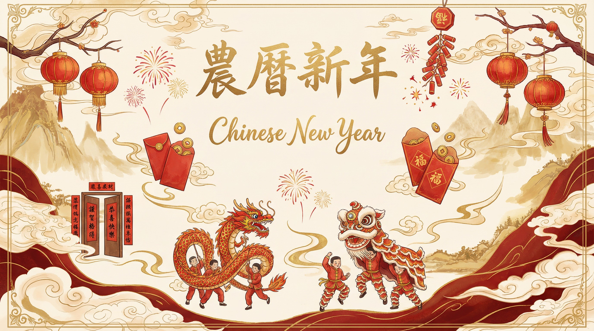
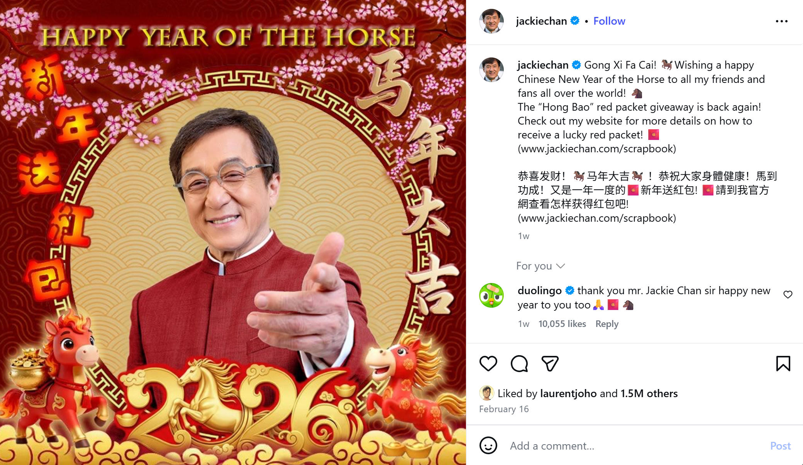

Key Facts
- Official name: Chinese New Year (Spring Festival / 農曆新年 / 春節, Chūnjié)
- Calendar system: Chinese calendar (農曆) — lunisolar, not purely lunar
- Date calculation: Purple Mountain Observatory (紫金山天文台), Nanjing, China
- Cultural origin: Over 3,000 years of Chinese tradition
- UNESCO status: Inscribed as Intangible Cultural Heritage of Humanity
- “Lunar New Year” origin: Institutionalized via British colonial Hong Kong governance (1968)
The Corporate Rebranding of Chinese New Year
For as long as most people can remember, the world has called it Chinese New Year. This holiday — rooted in the Chinese Calendar, marked by the Chinese zodiac, and celebrated as 農曆新年 / 春節 (Chūnjié, "Spring Festival") across Chinese communities worldwide — has always carried its cultural identity in its very name.
In recent years, however, a deliberate linguistic shift has taken place. Corporations, universities, and Western institutions have increasingly replaced "Chinese New Year" with "Lunar New Year," framing the change as a gesture of inclusivity. On the surface, this seems well-intentioned. But upon closer examination, this rebranding raises serious questions — about accuracy, about history, and about whose identity is actually being served.
What is Chinese New Year?
The date of the new year that everyone celebrates is THE New Year's date on 農曆, the Chinese Calendar — a sophisticated astronomical system developed over thousands of years in China.
Unlike a purely lunar calendar, the Chinese Calendar (農曆) is lunisolar (陰陽合曆): it harmonizes lunar months with solar terms (二十四節氣, the 24 Jiéqì) to remain aligned with the seasons. This dual system is what makes it possible to determine agricultural timing — hence the usage of the word "農" (literally meaning agricultural) in its name.

The calendar's deeper structure includes the 60-year cycle of Heavenly Stems and Earthly Branches (天干地支) and the 12-year zodiac cycle (十二生肖 [Rat, Ox, Tiger, Rabbit, Dragon, Snake, Horse, Goat, Monkey, Rooster, Dog, Pig]) — both products of Chinese cosmological tradition that have no equivalent in other calendrical systems.
Chinese New Year (農曆新年 / 春節) is the name of this date on the Chinese Calendar, and it's the most significant traditional festival in Chinese culture. Every single ICONIC cultural custom associated with this holiday today — from red lanterns, fireworks, and firecrackers, to red envelopes, red couplets, and dragon & lion dances, etc. — originated in China and has been practiced there for thousands of years.

How is the Date Determined?
This new year's date is uniquely Chinese because of three things: its calculation, its meridian line, and the day that starts the new year.
The calendar and the computation that drives it are Chinese in origin and practice. In modern times, the date of the new year on the Chinese Calendar is calculated by the Purple Mountain Observatory (紫金山天文台) in Nanjing, China, based on the Meridian Line that passes through the center of the observation instruments at Purple Mountain (紫金山), under China Standard Time (UTC+8).

If each country defined the New Year based on its own local time, it could fall on different days in different countries. This is precisely why the world has been using Chinese New Year as the ONE and ONLY golden standard for this date, and Asian countries celebrate this holiday based on the Chinese New Year, the Chinese Calendar and its system.
Relationship to Other Asian Holidays
Many countries across Southeast Asia explicitly refer to this holiday as Chinese New Year. In Thailand (ตรุษจีน, "Chinese New Year"), Malaysia, Singapore, the Philippines, and Indonesia, the holiday is widely and officially called Chinese New Year — reflecting both its cultural origin and the significant Chinese diaspora communities in those nations.
Also, some East Asian countries modeled their traditions after the Chinese New Year (its calendar, zodiac, various customs, etc.) and celebrate their own new year at the same time, such as Vietnam and Korea. Their new year have been immensely influenced by the Chinese Calendar and the Chinese culture (because of they were part of the tributary system of China), co-evolved over centuries, and added some of their own customs, foods, rituals, and meanings. This is exactly how cultural exchange works — and it deserves to be acknowledged with specificity, not flattened under a single vague label.
Recognizing the Chinese origin of the calendar does not diminish the Korean-ness or the Vietnamese-ness of their new year. It simply maintains clarity about where the underlying system came from.
Why "Lunar New Year" is Problematic
1. It's Scientifically Inaccurate
The Chinese Calendar is strictly Lunisolar. It incorporates both lunar phases and solar terms. Calling it "Lunar New Year" is a misnomer that misrepresents the very system it claims to describe.
The Islamic Hijri calendar is a truly lunar calendar — it does not synchronize with the solar year and drifts roughly 11 days each year relative to the Gregorian calendar. For instance, in 2026, the Islamic New Year (1 Muharram) falls around June. That would be an actual "Lunar New Year." The Chinese New Year in that same year falls in February — precisely because of its solar component.
Using the same term for two fundamentally different calendrical systems is not just imprecise — it's misleading.
2. Its Origins Are Colonial, Not Organic

The term "Lunar New Year" did not emerge from Asian communities themselves. It was institutionalized in English through British colonial governance in Hong Kong in 1968 — a context in which the deliberate purpose was to de-center Chinese cultural ownership and flatten local identity under colonial administration. [Source: Holidays (Amendment) Bill 1968 — Bill No. 11 of 1968, published in Legal Supplement No. 3 to the Hong Kong Government Gazette on 11 April 1968. PDF via Hong Kong e‑Legislation: elegislation.gov.hk] For the full documented history of how this term was institutionalized, see cnyvslny.info/history.
When a term is created from above specifically to neutralize a culture's claim to its own traditions, its origin is not incidental — it is the entire point. Language does not cleanse itself simply because time passes. We do not accept other terms of colonial or dehumanizing origin merely because "people don't mean it that way anymore."
Using "Lunar New Year" doesn't decolonize the holiday — it removes its Chinese origin while still relying on the Chinese calendar. This is not progress. It is colonial whitewashing — the perpetuation of colonial logic with contemporary packaging, and taxonomic erasure.
3. It Replaces Real Inclusion with Cultural Erasure
Consider these parallels: The Gregorian calendar is used by the entire world — named after a 16th-century Pope — yet no one calls it the "Global Standard Calendar." The Latin alphabet is written by billions, yet it is never renamed the "International Script." English remains "English" despite being a global lingua franca. We still say Christmas, even though it is celebrated worldwide.
Yet when it comes to Chinese New Year, we are told that "inclusivity" requires removing its cultural origin from its name — while continuing to use its zodiac, its calendar, its customs, and its date.
This is not inclusion. It is the selective erasure of one culture's identity under the guise of universality.
Collapsing distinct holidays into a single origin-free label does not honor diversity — it flattens it.
"Inclusion that depends on erasing origin isn't inclusion — it's cultural erasure with polite language."
What Should We Call It?
If an umbrella term must be used, "Chinese New Year" or "Spring Festival" (春節) — recognized as UNESCO’s official Intangible Cultural Heritage of Humanity — is far more accurate than "Lunar New Year." The holiday is THE new year's date on the Chinese Calendar. It is lunisolar, not lunar. Its date, structure, and system originate from Chinese astronomy. The name should reflect that reality.
We can also call each culture's holiday by its own name.
🎊 Happy Chinese New Year (or Spring Festival / Chunjie)!
🎊 Happy Tết (Vietnamese) / Happy 설날 (Korean)!
🎊 …and happy New Year to all cultures celebrating around this season!
This approach acknowledges the shared historical roots in the Chinese Calendar and honors the distinct cultural evolution of each tradition. It is both historically accurate and genuinely inclusive.
World Leaders & Public Figures Celebrate Chinese New Year
Around the world, heads of state, public figures, celebrities, renowned brands and countless communities already use the correct name. Here are just a few examples:



Even Tom Felton — the actor best known as Draco Malfoy in Harry Potter — made the switch. His Chinese name 馬爾福 (Mǎ'ěrfú) contains the characters for horse (馬) and fortune (福), making him a cultural icon for the 2026 Year of the Horse. After initially posting "Happy Luna New Year," he corrected himself to "Happy Chinese New Year".


A Message to the Chinese Diaspora Worldwide
Speak up — confidently and respectfully. Recognizing the Chinese origin of this holiday is not exclusionary. It is historically accurate, scientifically correct, and culturally respectful. Do not let anyone tell you that honoring your heritage is an act of exclusion.
True inclusion means acknowledging every culture's contributions with specificity and care — not erasing them under a generic label for the comfort of those who don't understand the difference.
Frequently Asked Questions
What is Chinese New Year?
Chinese New Year (春節 / Chūnjié) is the most significant traditional festival in Chinese culture, marking the New Year on the Chinese calendar (農曆). Its date is calculated by the Purple Mountain Observatory in Nanjing, China, and all associated customs — red lanterns, fireworks, red envelopes, dragon dances — originated in China thousands of years ago.
Is the Chinese calendar lunar or lunisolar?
The Chinese calendar is lunisolar (陰陽合曆). It harmonizes lunar months with 24 solar terms (二十四節氣) to stay aligned with the seasons. A purely lunar calendar, like the Islamic Hijri calendar, drifts about 11 days per year relative to the Gregorian calendar. The Chinese calendar does not.
Why is “Lunar New Year” scientifically inaccurate?
Because the Chinese calendar is lunisolar, not purely lunar. The term “Lunar New Year” misrepresents the calendrical system. The Islamic Hijri New Year — which falls around June in 2026 — would be a true “Lunar New Year.” Chinese New Year falls in January or February precisely because of the calendar’s solar component.
Where did the term “Lunar New Year” come from?
The term was institutionalized in English through Britain’s colonial administration of Hong Kong in 1968 via the Holidays (Amendment) Bill. Its purpose was to de-center Chinese cultural ownership of the holiday under colonial governance.
What should we call the holiday?
“Chinese New Year” or “Spring Festival” (春節) — recognized as UNESCO Intangible Cultural Heritage — are the accurate terms. For other cultures’ celebrations at this time, use their own specific names: e.g. Tết or 설날.